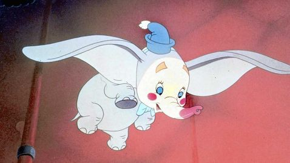

#10298 Disneys Tollkühne Flieger
 
 IMDB-Wertung: 0.0 / 10
IMDB-Wertung: 0.0 / 10  Metascore: 0
Metascore: 0 
ine Menge toller Geschichten rund ums Fliegen! Für diese Zusammenstellung klassischer Disney-Zeichentrickfilme mit Peter Pan und Dumbo wurden auch Donald Duck, Goofy, A- und B-Hörnchen engagiert. Ihr seht viel Verrücktes vom fliegenden Esel bis hin zu Donalds selbstgebackenem Flugzeug.
Jahr: 1986
Dauer: 43 Minuten
FSK: 0
Land: Studio: Tonspuren: DD2.0 - ,
Untertitel:
Auflösung: 720p (1400x1080) Größe: 2140 MB
Genre: Animation/Trick
Regisseur:
Drehbuch:
Soundtrack:
Darsteller:
Datei: X:\Kinder Disney HD\Classic Cartoon\Disneys Tollkühne Flieger (1986, FSK0, 1400x1080).mkv seit 29.12.2018
Festplatte: Kinder-Filme+Trick
 Es gibt insgesamt 22 Filme in der Gruppe 'Kinder Disney HD\Classic Cartoon'
Es gibt insgesamt 22 Filme in der Gruppe 'Kinder Disney HD\Classic Cartoon'